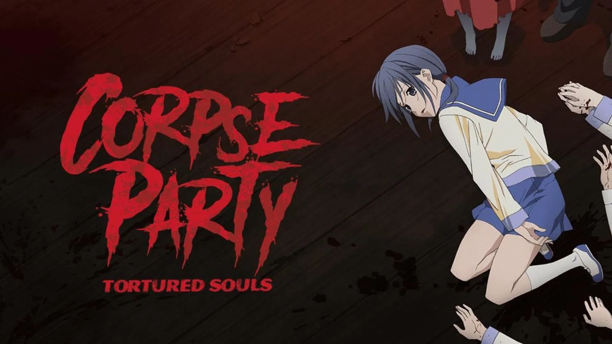
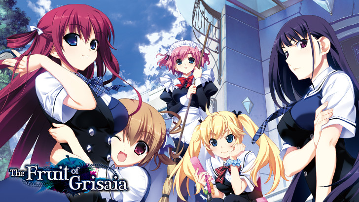
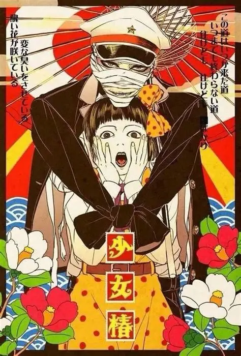
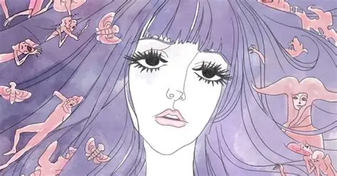
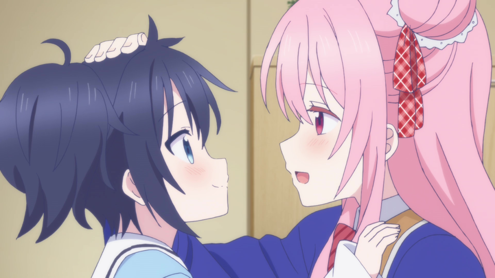
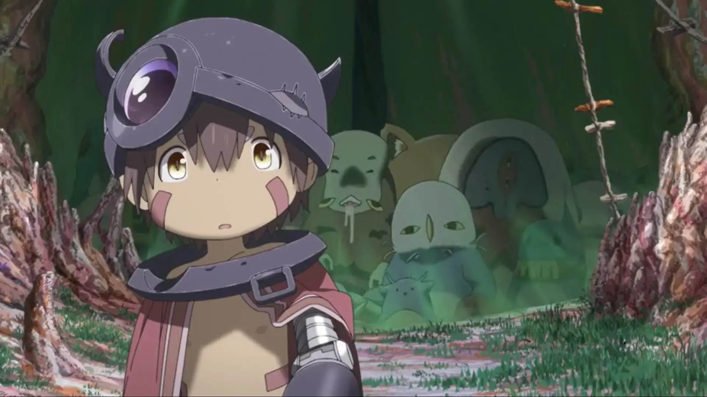
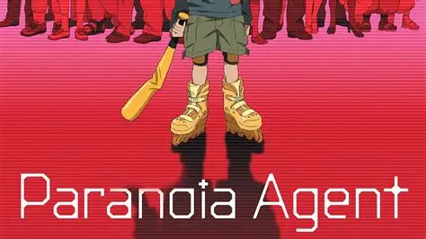
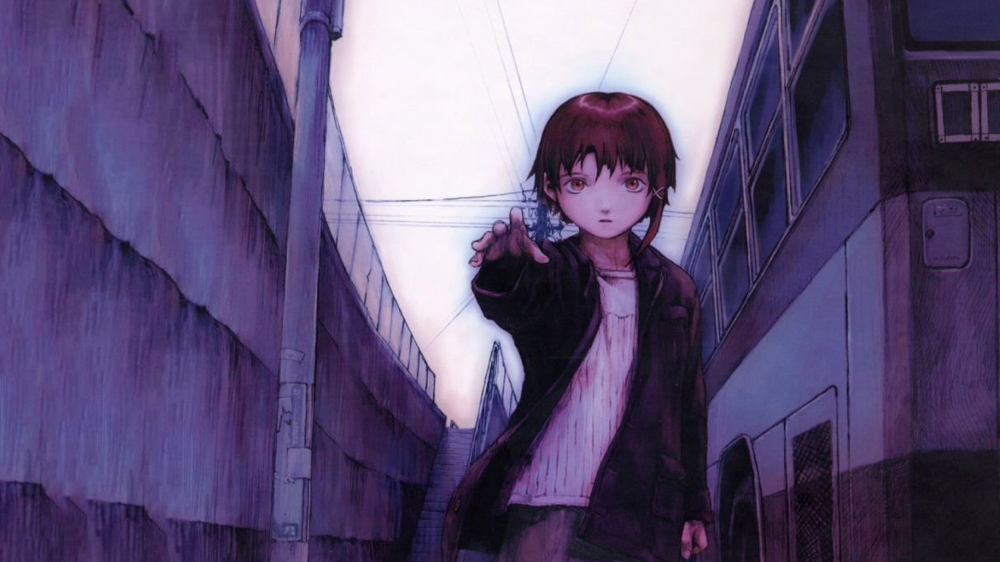

SMASH Senpai
Top 10 Most Disturbing Anime That Will Haunt You Long After Watching
Some anime don’t scare you. They don’t rely on cheap jump scares or mindless shock. Instead, they slowly sink into your thoughts and refuse to leave.
These are the kind of anime that make you uncomfortable — not because they’re loud or flashy, but because of how real, twisted, or emotionally exhausting they feel.
This list isn’t about gore for the sake of it. It’s about disturbing anime that linger, replaying in your head long after the final episode ends.
Many of these aren’t mainstream favorites. Some are underrated, some are difficult to recommend, and some feel like they were never meant for casual viewers.
These are the Top 10 Most Disturbing Anime that will haunt you long after watching.
Sponsored
#1 Corpse Party
Corpse Party is not just disturbing — it is relentlessly cruel. From the moment it begins, the anime traps its characters inside a cursed, nightmarish school where death is sudden, painful, and unavoidable. There are no heroic escapes, no comforting explanations, and no mercy.
What makes Corpse Party so unsettling is how personal the horror feels. The victims aren’t warriors or trained fighters — they’re ordinary students forced to experience extreme fear, helplessness, and brutal deaths. The anime doesn’t shy away from showing the consequences of terror, both physical and psychological.
Unlike many horror anime that rely on atmosphere alone, Corpse Party confronts the viewer directly with suffering. Characters break down, lose hope, and are forced to witness the deaths of their friends in horrifying ways. Every escape attempt feels desperate, fragile, and temporary.
The short length of the series works in its favor. There is no filler, no relief, and no time to breathe. Each episode escalates the cruelty, making the experience feel suffocating and emotionally draining.
Corpse Party is disturbing because it offers no comfort. It exists purely to show how fragile life becomes when hope is stripped away completely.
- Episode count: 4
- Genre: Horror, Supernatural, Psychological
- Best for: Extreme horror fans, dark anime enthusiasts
- Core theme: Hopeless survival and psychological trauma

play anime smash or pass here (not sponsored)
SMASH SENPAI – Smash or Pass#2 The Fruit of Grisaia
The Fruit of Grisaia is disturbing not because of constant violence, but because of the emotional damage it reveals beneath its surface. At first glance, it looks like a standard school anime with light moments and familiar tropes — but that illusion does not last.
As the story unfolds, each character’s past is slowly exposed, revealing extreme trauma, abuse, isolation, and psychological scars. The contrast between the calm school setting and the horrifying backstories makes every revelation hit harder than expected.
What makes Grisaia especially unsettling is how realistically it portrays coping mechanisms. Characters don’t magically heal — they survive. Their personalities, fears, and behaviors are shaped by experiences that still haunt them.
The anime also explores moral ambiguity through its protagonist, whose calm demeanor hides a deeply damaged past of his own. Violence, manipulation, and emotional detachment are presented as survival tools rather than heroic traits.
The Fruit of Grisaia is disturbing because it forces the viewer to sit with trauma instead of rushing past it. Once the cheerful mask falls, the story becomes deeply uncomfortable and emotionally heavy.
- Episode count: 13
- Genre: Psychological, Drama, Thriller
- Best for: Viewers who prefer emotional and mental horror
- Core theme: Trauma, survival, and emotional scars
Sponsored
#3 Shoujo Tsubaki (Midori)
Shoujo Tsubaki, also known as Midori, is one of the most unsettling anime films ever made — not because of shock alone, but because of its complete lack of emotional safety. It is a bleak, cruel portrayal of exploitation and suffering presented without comfort or redemption.
The story follows a young girl who is repeatedly abused, manipulated, and dehumanized by the world around her. The anime does not romanticize her pain or frame it as meaningful growth. Instead, it forces the viewer to witness cruelty as an unavoidable reality.
What makes Shoujo Tsubaki especially disturbing is its presentation. The visuals feel old, raw, and intentionally uncomfortable, enhancing the feeling that you are watching something you were never meant to see.
There is no heroic escape, no moral lesson neatly packaged at the end. The suffering exists simply because the world allows it to. That emotional emptiness is what makes the film so haunting.
Shoujo Tsubaki is not an easy recommendation, but it is unforgettable. It leaves behind a sense of unease that lingers long after the screen goes dark.
- Runtime: 48 minutes
- Genre: Psychological, Experimental, Drama
- Best for: Mature viewers seeking extreme emotional discomfort
- Core theme: Exploitation and emotional cruelty
#4 Kaiba

Kaiba is disturbing in the most deceptive way possible. At first glance, its soft art style and simple character designs make it look harmless — almost childlike. That illusion quickly collapses as the anime begins to explore some of the darkest concepts imaginable.
Set in a world where memories can be transferred and bodies can be bought, sold, or discarded, Kaiba presents a society where identity has lost all meaning. Lives are treated as replaceable objects, and death feels disturbingly casual rather than tragic.
What makes Kaiba especially unsettling is how quietly it presents its cruelty. There are no dramatic speeches or shocking reveals. Suffering happens calmly, almost gently, which makes it feel even more disturbing than explicit violence.
The anime repeatedly confronts themes of exploitation, emotional detachment, and inequality. Characters lose their memories, their bodies, and their sense of self, often without fully understanding what has been taken from them.
Kaiba is disturbing because it strips away the value of existence. By presenting a world where humanity is disposable, it leaves the viewer with a lingering sense of emptiness that quietly follows long after the final episode.
- Episode count: 12
- Genre: Psychological, Sci-Fi, Experimental
- Best for: Viewers who enjoy subtle, unsettling storytelling
- Core theme: Identity loss and emotional detachment
#5 Belladonna of Sadness
Belladonna of Sadness is disturbing not through shock, but through its overwhelming emotional weight. This is an art-house anime film that relies on symbolism, surreal imagery, and raw atmosphere to convey suffering.
The story follows a woman whose life is gradually destroyed by cruelty, injustice, and betrayal. Rather than presenting events in a straightforward manner, the film uses abstract visuals and dreamlike sequences to express emotional pain and isolation.
What makes Belladonna of Sadness so unsettling is how exposed it feels. There is no emotional distance between the viewer and the suffering on screen. The anime forces you to sit with discomfort rather than offering relief or resolution.
The art style plays a major role in its impact. Static images, minimal animation, and surreal compositions create a haunting experience that feels closer to watching a living painting than a traditional anime.
Belladonna of Sadness is disturbing because it transforms emotional trauma into something beautiful and horrifying at the same time. It is an experience that stays with you long after it ends, leaving behind a quiet sense of unease.
- Runtime: 86 minutes
- Genre: Psychological, Art, Drama
- Best for: Mature viewers and art-house anime fans
- Core theme: Emotional suffering and symbolic expression
#6 Happy Sugar Life
Happy Sugar Life is disturbing because it hides its horror behind a cheerful, colorful presentation. On the surface, it looks cute and harmless — but beneath that sweetness lies obsession, manipulation, and emotional instability.
The anime centers around a warped definition of love. Characters justify extreme actions in the name of happiness, convincing themselves that cruelty is acceptable as long as it protects what they care about.
What makes Happy Sugar Life especially unsettling is how self-aware its characters are. They understand that their behavior is wrong, yet continue anyway, clinging to the belief that their version of love is pure.
The contrast between its soft visuals and dark themes intensifies the discomfort. Bright colors, innocent music, and gentle character designs clash violently with the psychological damage being shown.
Happy Sugar Life is disturbing because it questions where love ends and obsession begins. It leaves the viewer unsettled, forcing them to confront how easily affection can twist into something dangerous.
- Episode count: 12
- Genre: Psychological, Thriller, Horror
- Best for: Viewers who enjoy twisted character studies
- Core theme: Obsession disguised as love
Sponsored
#7 Made in Abyss
Made in Abyss is disturbing because it hides unimaginable cruelty beneath breathtaking beauty. At first glance, it feels like a fantasy adventure filled with wonder, curiosity, and childlike innocence. That illusion does not survive for long.
As the characters descend deeper into the Abyss, the anime gradually reveals its true nature. Every layer introduces harsher rules, greater suffering, and irreversible consequences. Pain is not temporary, and mistakes are not forgiven.
What makes Made in Abyss especially unsettling is how vulnerable its characters are. The story places children in situations of extreme physical and emotional trauma, forcing them to endure loss, fear, and permanent damage.
The contrast between its soft character designs and brutal events intensifies the horror. Scenes of suffering feel more disturbing because they come from a world that looks peaceful and inviting.
Made in Abyss is disturbing because it presents exploration as something that demands a terrible price. By the end, the beauty of the Abyss feels inseparable from the pain it inflicts, leaving a haunting impression that lingers long after watching.
- Episode count: 13 + sequel films
- Genre: Adventure, Psychological, Dark Fantasy
- Best for: Viewers who want beauty mixed with brutality
- Core theme: Curiosity, sacrifice, and irreversible consequences
#8 Paranoia Agent
Paranoia Agent is disturbing because it attacks the mind rather than the senses. It blurs the line between reality and delusion, slowly dismantling the viewer’s sense of certainty.
Each episode introduces new characters trapped by stress, guilt, or fear. Instead of resolving their problems, the anime allows paranoia to spread, turning anxiety into something contagious.
What makes Paranoia Agent especially unsettling is its refusal to provide clear answers. Events feel disjointed, perspectives shift constantly, and truth becomes unreliable. The confusion mirrors the mental states of the characters.
The infamous attacker at the center of the story becomes more of an idea than a person. Fear itself transforms into a shared escape, allowing people to avoid confronting reality.
Paranoia Agent is disturbing because it reflects how easily society can collapse inward. By the end, the anime feels less like fiction and more like a psychological mirror held uncomfortably close.
- Episode count: 13
- Genre: Psychological, Mystery, Thriller
- Best for: Viewers who enjoy abstract psychological horror
- Core theme: Fear, denial, and collective anxiety
#9 Serial Experiments Lain
Serial Experiments Lain is disturbing because it slowly erases the boundary between self and reality. The anime unfolds quietly, relying on silence, repetition, and atmosphere rather than overt horror.
As Lain becomes more connected to the digital world, her identity begins to fracture. Memories lose consistency, personalities overlap, and existence itself feels unstable.
What makes Lain especially haunting is its emotional isolation. Characters feel distant, disconnected, and unable to communicate meaningfully with one another. Loneliness becomes a constant presence.
The anime rarely explains its concepts directly. Instead, it allows discomfort to grow naturally, forcing the viewer to piece together meaning from fragments and implications.
Serial Experiments Lain is disturbing because it questions whether identity can survive in a world where reality is endlessly replicated. Long after it ends, its ideas continue to echo quietly in the background of your thoughts.
- Episode count: 13
- Genre: Psychological, Sci-Fi, Experimental
- Best for: Viewers who enjoy slow, thought-provoking anime
- Core theme: Identity loss and digital existence
#10 Bokurano

Bokurano is disturbing because it removes the illusion of heroism. At first, the premise resembles a typical mecha story, but it quickly reveals a cruel and unavoidable reality.
A group of children are tasked with saving the world, only to discover that each victory comes at a devastating cost. There are no miracles, no alternate paths, and no exceptions to the rules.
What makes Bokurano especially painful is how much time it spends on its characters. Each child is given personal fears, regrets, and unfinished dreams — all of which feel unbearably fragile.
The anime does not dramatize sacrifice. It presents it quietly, almost casually, which makes every loss feel heavier. Acceptance replaces hope, and inevitability becomes the true antagonist.
Bokurano is disturbing because it forces the viewer to confront unfairness without comfort. By the end, the emotional weight feels crushing, leaving behind a lingering sense of emptiness that refuses to fade.
- Episode count: 24
- Genre: Psychological, Drama, Mecha
- Best for: Viewers seeking emotional devastation
- Core theme: Sacrifice and unavoidable fate
Play Smash or Pass on SMASH Senpai.
 PLAY SMASH OR PASS
PLAY SMASH OR PASS